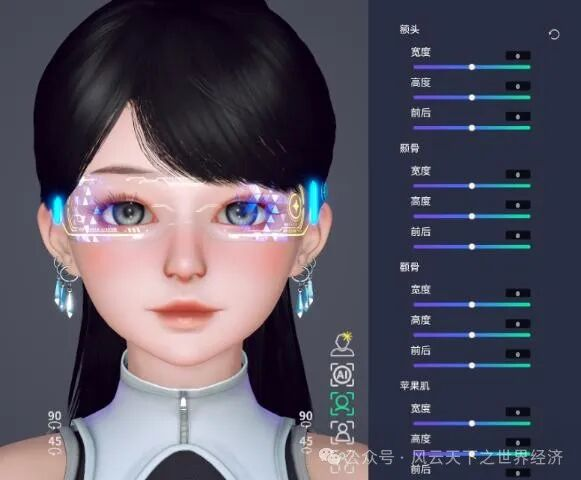
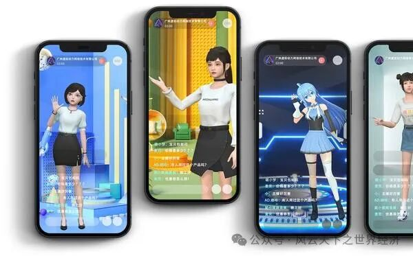
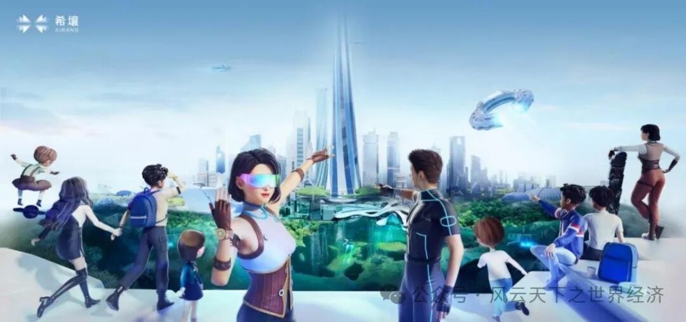

想象一下，一个不知疲倦、永远在线的主播，她不仅精通多国语言，还能在分秒之间读懂你的心。这不是科幻小说的情节，而是AI技术在直播电商行业中带来的革命性变革。本文将带你走进虚拟主播许霓的奇妙世界，一探究竟AI如何以一种既高效又充满魅力的方式，重塑着现代商业的每一个角落。许霓的一天，充满了技术革新的火花，她的工作不仅展示了AI的无限可能，还预示着一个全新的商业时代的到来。

许霓形象塑造
许霓的一天
我叫许霓，是某家化妆品品牌店铺直播间2024年刚上岗的虚拟主播。今年初在公司引入AI系统后，我正式上岗。在此之前，前一任主播是一个真实的人类。下面是我作为化妆品品牌直播间主播的“一天”。
早晨：直播准备
07:00 - 我的系统开始自动更新，加载最新的商品信息、市场趋势和用户行为数据。同时，我的开发团队对昨晚的直播数据进行分析，优化我的推荐算法和互动脚本。
08:00 - 我的直播间逐渐亮起，技术团队进行最后的系统检查，确保一切运行正常。他们还根据观众的活跃时间调整我的直播计划，以最大化观众的参与度。
上午：清新美妆的开始
08:30 - 随着新的一天的到来，我开始了我的直播。首先，我向早起的观众展示我们品牌中适合清晨护肤的产品，并进行详细讲解及示范，强调它们对肌肤保养的重要性，以及如何在日常护肤中融入这些产品。同时，我的AI系统开始收集观众的实时反馈，包括他们的点击、评论和购买行为。
09:00 - 我开始介绍我们品牌的彩妆系列，从底妆到眼妆，一步步展示如何打造完美的日常妆容。我详细讲解并示范我们品牌的护肤品，强调它们对肌肤保养的重要性，以及如何在日常护肤中融入这些产品。并通过实时数据分析，了解观众对不同产品的关注度。我根据这些信息调整我的展示顺序，优先介绍那些受欢迎的产品。
10:30 - 我与观众进行实时互动，解答他们在化妆品使用上的疑问，并根据他们的反馈提供个性化的美妆建议。
中午：美容小憩
12:00 - 我利用午休时间，为观众提供一些快速的美容小贴士，如何在办公室快速补妆，以及如何保持妆容一整天的新鲜感。
13:30 - 我推出我们的午间特惠活动，为观众提供限时折扣，鼓励他们尝试我们品牌的新产品。下午：化妆品深度解析
14:30 - 我深入讲解化妆品的成分和功效，帮助观众了解如何选择适合自己肤质的产品。
16:00 - 我展示我们的新产品线，包括季节限定的彩妆系列，以及如何将这些新品融入到日常妆容中。并根据观众对新产品的初步反应，实时调整我的讲解策略和展示方式，以便更有效地传达产品的特点和优势。
晚上：美丽不打烊
18:00 - 我开始晚间的直播，重点介绍夜间护肤的重要性，以及如何使用我们品牌的产品进行有效的夜间护肤。
20:00 - 我举办晚间特惠活动，为观众提供晚间购物的优惠，包括折扣和赠品。根据整体直播数据，为观众提供更具吸引力的折扣和优惠，促进销售。
深夜：夜间美妆陪伴
22:00 - 即使夜深了，我依然在直播间陪伴观众。我推荐适合夜间使用的护肤产品，帮助他们在繁忙的一天后得到充分的肌肤修复和保养。24:00 - 我继续为夜间观众提供服务，介绍有助于改善睡眠质量的美容产品，如舒缓的香薰油和夜间修复面膜。
全天候：技术维护与内容更新
全天候 - 我的AI系统在后台持续进行自我优化和内容更新，确保我能够提供最新、最准确的化妆品信息和美容趋势。
后台团队 - 我的开发团队在每天将对我进行日常的维护和升级。并根据今天的直播表现和观众反馈，对我的形象、语音和互动能力进行优化。

许霓的直播间
一场关键的对决：虚拟主播的胜利
时间回到许霓上任前一周，一场决定谁去谁留的重要对决正在直播间上演。真人主播甄仁，拥有忠实粉丝团的直播老将，与虚拟主播许霓，携带着AI技术的新星，准备在这场PK中一决高下，决定这个岗位的最终归属。
直播室内，灯光聚焦，观众的期待如同热浪般涌动。甄仁站在镜头前，用她标志性的微笑和魅力开启了直播。然而与此同时在另一个直播间，当虚拟主播许霓的影像出现在屏幕上时，直播间吸引了大量闻声而来的观众想要一睹AI主播的真面目，直播间的互动区域爆发了热烈的讨论。
直播间内，主播甄仁正在依靠她对产品深刻的理解和个人魅力，为观众提供个性化的推荐。然而，随着直播间观看人数的不断上升，且观众对于产品的疑问和需求都是不同的，互动区域的问题疯狂刷屏，主播甄仁一时间有点看花了眼，无法回复所有的评论，只能挑一些她看得到的评论进行回复。几分钟后，后台频繁出现客诉，大量观众反馈表示在评论区内发了好几遍关于产品的问题但是主播完全没有理会，客服迅速向主播反馈这个问题，但是甄仁仍然由于精力有限仍然只能回复视线范围内小部分观众的问题，客诉率仍然高居不下。相比下，在AI主播许霓的直播间内，许霓利用她的AI系统，通过实时数据分析，为每一位观众提供量身定制的美妆建议。她的推荐总是那么精准，仿佛能洞察观众的内心。同时能实时响应观众的每一个问题和反馈，她的回答总是那么迅速和准确，让观众感到自己的声音被真正听见。这是由于许霓的话术和讲解与互动区域的问题、后台反馈的数据高度相关，当许霓检测到有多次重复的问题出现时，会将这些问题的回答优先级提高，并根据后台反馈的对产品的评论和呼声调整产品销售的顺序，最终的结果反馈许霓直播间的好评率和销量都非常优秀。
随着夜幕降临，真人主播甄仁的直播间里，她的声音逐渐透出一丝疲惫。五小时的直播后，她依旧以“勉强”的笑容和观众道别，尽管仍然想为了胜利继续直播，但体力的限制让她不得不结束今天的分享。与此同时，虚拟主播许霓的直播间里，却是一幅截然不同的景象。许霓以AI的无限精力，继续为涌入的夜猫子观众们提供服务。她的AI系统根据实时数据分析，精准调整了直播内容，推荐了一系列适合夜间使用的护肤产品，包括夜间修复精华和助眠香薰，满足了夜间观众对舒缓和修复的需求。从最终的数据看，24小时且具备针对性的直播使得许霓直播间的总销售额大幅超过甄仁的直播间。
最终，这场PK以许霓的胜利告终。她不仅以其AI的优势，为直播电商行业带来了新的活力和可能性，还以其全天候的服务、个性化的推荐、低成本的运营和实时的互动，赢得了观众和品牌的青睐。甄仁虽然依然拥有一席之地，但许霓的胜出标志着一个更加多元化和个性化的直播电商时代的到来。
The Real World: 欣欣向荣的AI主播市场
主播许霓虽然是虚构的AI形象，但事实上虚拟主播市场正在现实世界中蓬勃发展，逐步改变直播电商行业的发展格局。
随着数字文化产业的兴起，中国虚拟人产业市场规模在2022年已达到1866.1亿元，核心市场规模为120.8亿元。AI技术的不断迭代，尤其是深度学习与自然语言生成技术的进步，为虚拟主播的发展提供了技术基础。同时，元宇宙概念的流行和“Z时代”用户群体的崛起，为虚拟主播创造了广阔的市场空间和社会基础。目前虚拟主播行业正处于高速发展阶段，预计到2025年市场规模将增长至6402.7亿元。目前，虚拟主播的商业应用场景不断拓宽，从传统媒体到直播电商，已成为品牌营销中不可忽视的一环。虚拟主播不仅能够实现24小时无障碍沟通，还能通过个性化推荐和实时互动提升用户体验。
AI技术的快速迭代是虚拟主播行业发展的核心驱动力。从虚拟主持人到AI合成主播，虚拟主播的技术已经经历了多个发展阶段。基于深度学习的自然语言生成技术，如ChatGPT和“文心一言”，与虚拟人的结合，极大地提升了虚拟主播的智能化水平。这不仅使得虚拟主播能够进行更加自然和流畅的交流，还能够实现更加精准的个性化推荐和实时互动，提升了用户体验。此外，技术的进展还有望降低虚拟主播的制作成本，实现个性化定制和全智能交互，进一步推动虚拟主播的商业化和普及。同时，元宇宙的兴起为虚拟主播提供了一个沉浸式和互动性强的新平台，极大地拓展了其表演舞台和商业机会，而“Z时代”用户群体对新技术的高接受度和个性化需求，与虚拟主播所能提供的定制化内容和服务高度契合，从而形成了强大的市场需求。资本市场对这一新兴领域的关注和投资，进一步加速了虚拟主播技术的研发、创新以及行业规模的扩大。技术进步与市场需求之间的积极互动，推动了虚拟主播表现的逼真度和智能化水平的提升，同时也促进了更多高质量内容的产生。这些因素共同作用，为虚拟主播行业的蓬勃发展提供了坚实的基础，并预示着该行业在未来将拥有更加广阔的发展前景。
虚拟主播行业正站在技术革新和文化变迁的前沿，受到元宇宙概念和"Z时代"用户偏好的双重推动，展现出强劲的增长势头。资本的积极投入和技术的快速迭代，特别是AI和自然语言处理技术的应用，不仅提升了虚拟主播的智能化水平，也为行业注入了创新活力。随着市场对个性化和互动性内容需求的不断增长，虚拟主播正逐渐成为连接消费者和品牌的新桥梁，预示着直播电商和数字娱乐领域将迎来更加广阔的发展空间和商业潜力。

元宇宙世界
随着我们对虚拟主播许霓日常工作的深入了解，AI技术在直播电商行业中的卓越表现已经跃然纸上。许霓的故事，就像一场精彩纷呈的直播，展示了AI如何成为连接品牌与消费者的新桥梁。从不间断的直播到个性化服务，从成本效益到实时互动，再到商业模式的创新，AI主播的优势如同一场精心编排的演出，每一个细节都经过了深思熟虑。展望未来，随着技术的不断进步，AI主播无疑将在商业领域中绽放更加耀眼的光芒，引领我们进入一个充满机遇的新时代。而在这样的时代下，我们各自又将扮演着怎样的角色，将是我们这一代人需要深思的人生命题。